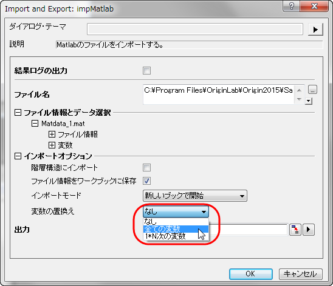

FAQ-438 MATLABからデータをインポートしたときに変数を置き換えるにはどのようにしたら良いでしょうか。
Matlab-Transpose-Variable
最終更新日:2015/02/04
MATLABからOriginのワークシートや行列にデータをインポートするとき、変数を置き換えたいことがあるかもしれません。この機能は、インポートファイル内のすべて、あるいは一部の変数を置き換える操作のために利用できます。
以下のように操作します。
- 新しいワークブック（行列）を作成します（メニューから、ファイル：新規作成：ワークシート（あるいはファイル：新規作成：行列と選択）。
- ファイル：インポート：Matlab(Mat) を選択して、MATLABファイルを選択し、下部パネルに追加します。OKをクリックしてダイアログを閉じます。
- インポートオプションのセクションで、変数の置換えドロップダウンリストから、全ての変数あるいは、1*N次の変数を選択します。OKをクリックしてダイアログを閉じます。

キーワード: MATLAB, データインポート, 置換え
必要なOriginのバージョン:2015SR0